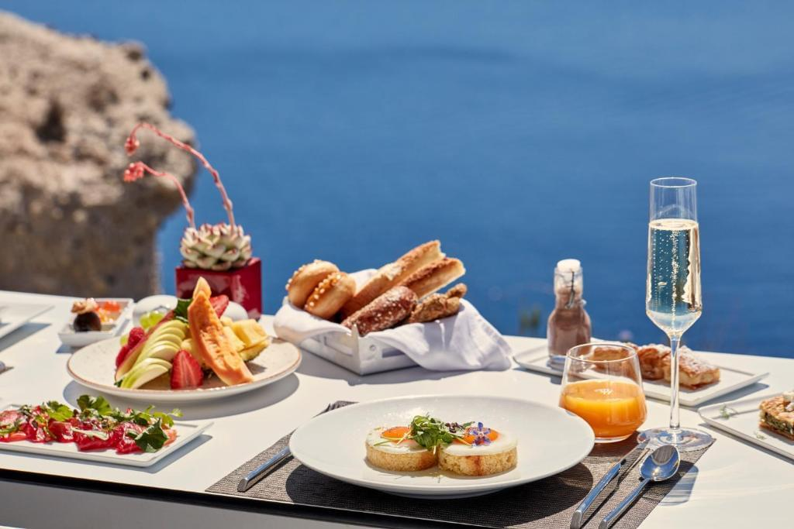
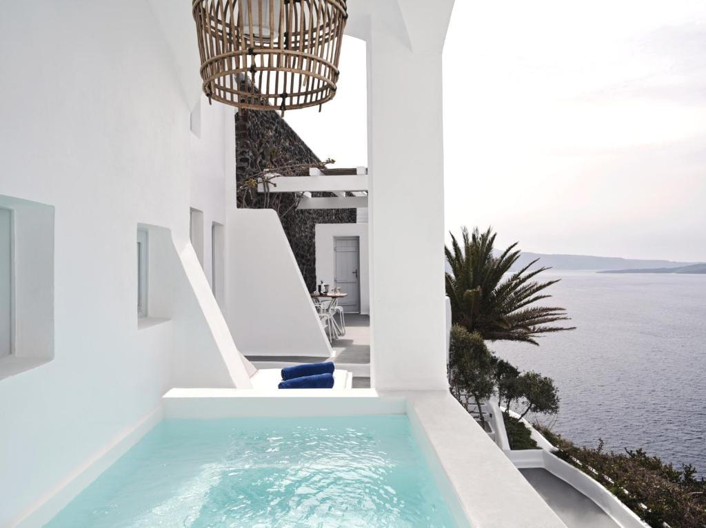
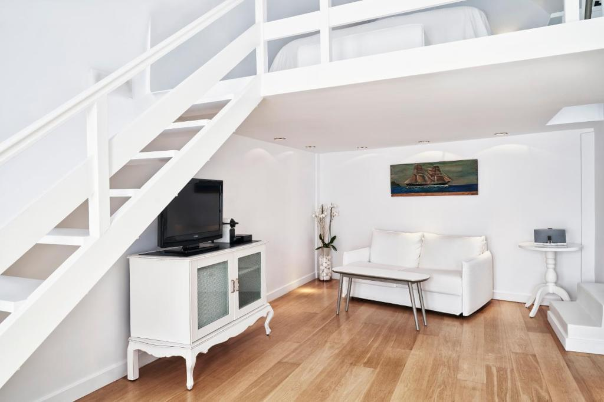
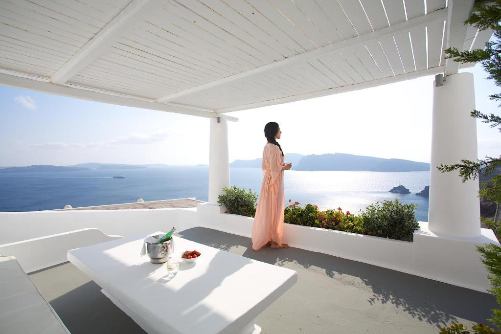

Το ξενοδοχείο Katikies Santorini Hotel είναι η πραγματική επιτομή της πολυτέλειας, του ρομαντισμού και της ατελείωτης αρμονίας με τη φύση στις ακτές του Αιγαίου Πελάγους. Αυτό το ξενοδοχείο βρίσκεται στο πανέμορφο νησί της Σαντορίνης στην Ελλάδα και αποτελεί σύμβολο εκλέπτυνσης και πολυτέλειας στην καρδιά του αρχιπελάγους του Αιγαίου.
Αρχιτεκτονική και σχεδιασμός
Το Katikies Santorini είναι ένα αριστοτεχνικό μείγμα παραδοσιακού στυλ Kikuyu και μοντέρνων στοιχείων σχεδιασμού. Το ξενοδοχείο είναι χτισμένο στις ελικοειδείς πλαγιές και οι ασβεστωμένοι τοίχοι και οι γαλάζιες θαλάσσιες πισίνες του δημιουργούν ένα μαγευτικό παράδειγμα αρχιτεκτονικής ομορφιάς. Η προσοχή του ξενοδοχείου στη λεπτομέρεια και η δέσμευση για τη δημιουργία μιας μοναδικής εμπειρίας για τους επισκέπτες είναι αισθητή σε κάθε λεπτομέρεια.

Διαμονή
Το Hotel Katikies Santorini προσφέρει μια ποικιλία επιλογών διαμονής, όπως δωμάτια με πισίνα, σουίτες και βίλες. Κάθε δωμάτιο είναι μια ωδή στην άνεση και το στυλ, με πανοραμική θέα στη θάλασσα και την καλντέρα. Η εσωτερική διακόσμηση των δωματίων αντικατοπτρίζει την ελληνική κομψότητα, χρησιμοποιώντας φυσικά υλικά, απαλά υφάσματα και εκλεκτή επίπλωση.

Ανέσεις
Το Hotel Katikies Santorini διαθέτει πληθώρα εγκαταστάσεων, όπως ιδιωτικές πισίνες, σπα, εκλεκτά εστιατόρια και μπαρ με θέα στο ηλιοβασίλεμα. Το σπα προσφέρει ένα ευρύ φάσμα θεραπειών για χαλάρωση και αναζωογόνηση. Τα εστιατόρια του ξενοδοχείου προσφέρουν εκλεκτή ελληνική και διεθνή κουζίνα, ενώ το βραδινό ηλιοβασίλεμα από τη βεράντα του μπαρ μετατρέπεται σε πραγματικό θέαμα.

Τοποθεσία
Το Hotel Katikies Santorini βρίσκεται στο ιστορικό χωριό της Οίας, που φημίζεται για τη μαγευτική θέα στην καλντέρα και τη θάλασσα. Οι επισκέπτες μπορούν να απολαύσουν την εγγύτητα σε εστιατόρια, καταστήματα και πολιτιστικά αξιοθέατα, καθώς και να εξερευνήσουν τα στενά δρομάκια και τα ασβεστωμένα σπίτια του χωριού.

Συμπέρασμα
Το Hotel Katikies Santorini είναι ένα μοναδικό μέρος όπου η πολυτέλεια και η φύση συνδυάζονται για να δημιουργήσουν μια μαγική ατμόσφαιρα για τους επισκέπτες. Προσφέρει μια αξέχαστη εμπειρία ζωής σε ένα από τα ομορφότερα νησιά του κόσμου, όπου κάθε στιγμή γίνεται μια αξέχαστη ανάμνηση.